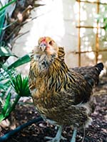
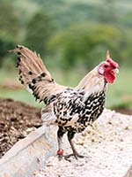
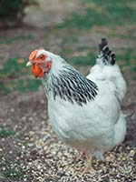
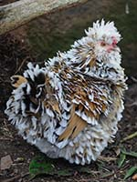
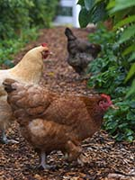
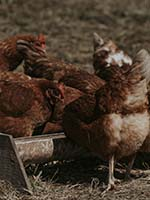
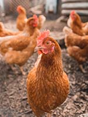
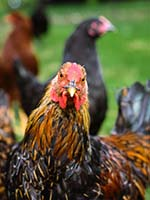

Auracana
They are also called Americauna, or more commonly 'Easter Eggers.'
They get this nickname because they lay blue, green, or sometimes even pink colored eggs.

Bantam
Rather than a breed, bantam refers to a certain type of chicken.
Bantam chickens are smaller chickens, meaning, when they are fully grown they are 1/4 to 1/2 the size of
a regular chicken. This results in much smaller eggs, as well.

Brahma
Brahmas are one of the largest chickens. Fully grown, the males can be up to 10 pounds.
Brahmas don't lay eggs as often (or as large) as an average chicken would, however.

Frizzle
Rather than a breed, frizzle refers to a feather type. This type of feather bends outward at the end,
resulting in a 'puffy' appearance.
There are several breeds that can have the frizzle feathers.

Orphington
More commonly known as Buff Orphingtons because of their golden color, Orphingtons are a very solid breed. They are weather hardy, lay well, and are medium sized.
Although known for their color, Orphingtons can come in almost any color.

Red Star
These chickens are light-weight, easy to take care of, and lay a lot of brown eggs.
If you want a chicken for it's eggs, buy a Red Star.

Rhode Island Red
Rhode Island Reds are similar to the Red Star. They are typically a bit bigger, but still lay eggs extremely well.
They are also easily domesticated. They are a deeper, more red color than the Red Star, sometimes with a green shine to their tail feathers.

Wyandotte
Wyandottes are a very common chicken breed. Their signature is the 'laced' feathers, meaning the edges of each feather is a different color than the middle.
The two colors they come in are Golden-Laced (white and brown, pictured), and Silver-Laced (white and black).